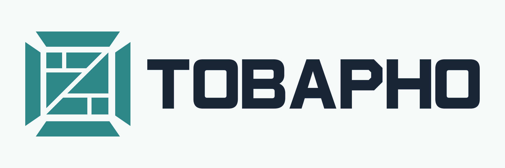
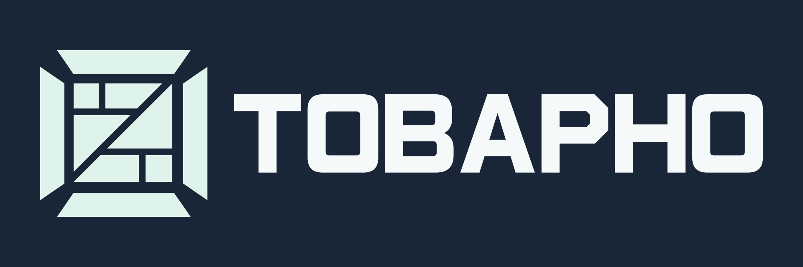
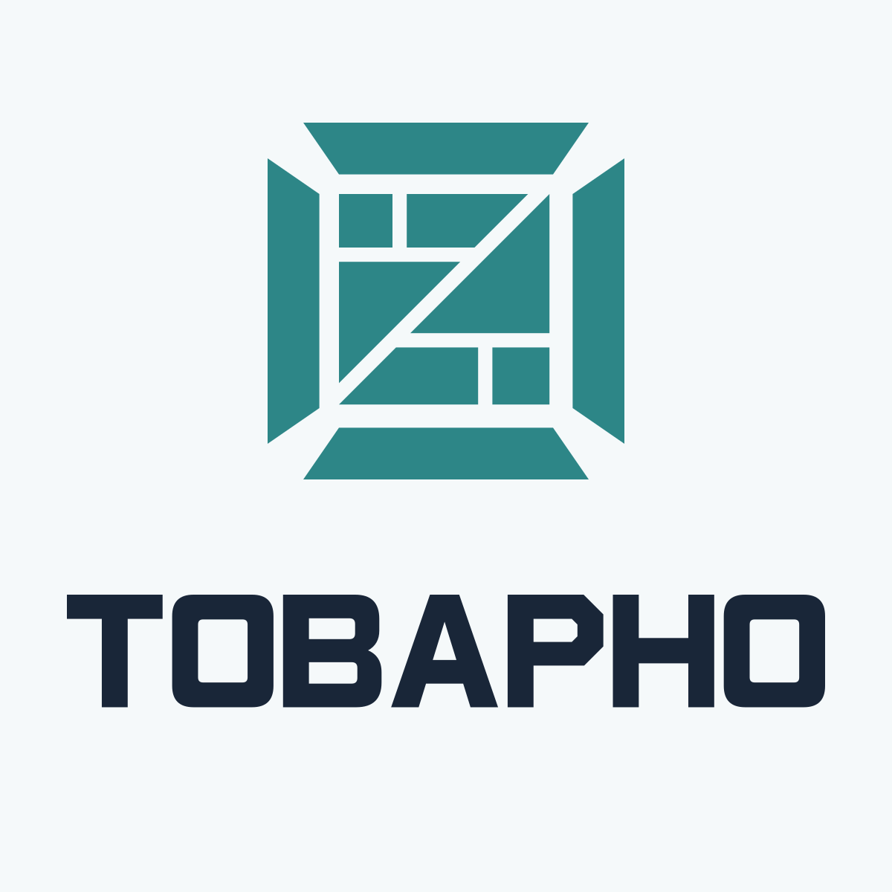
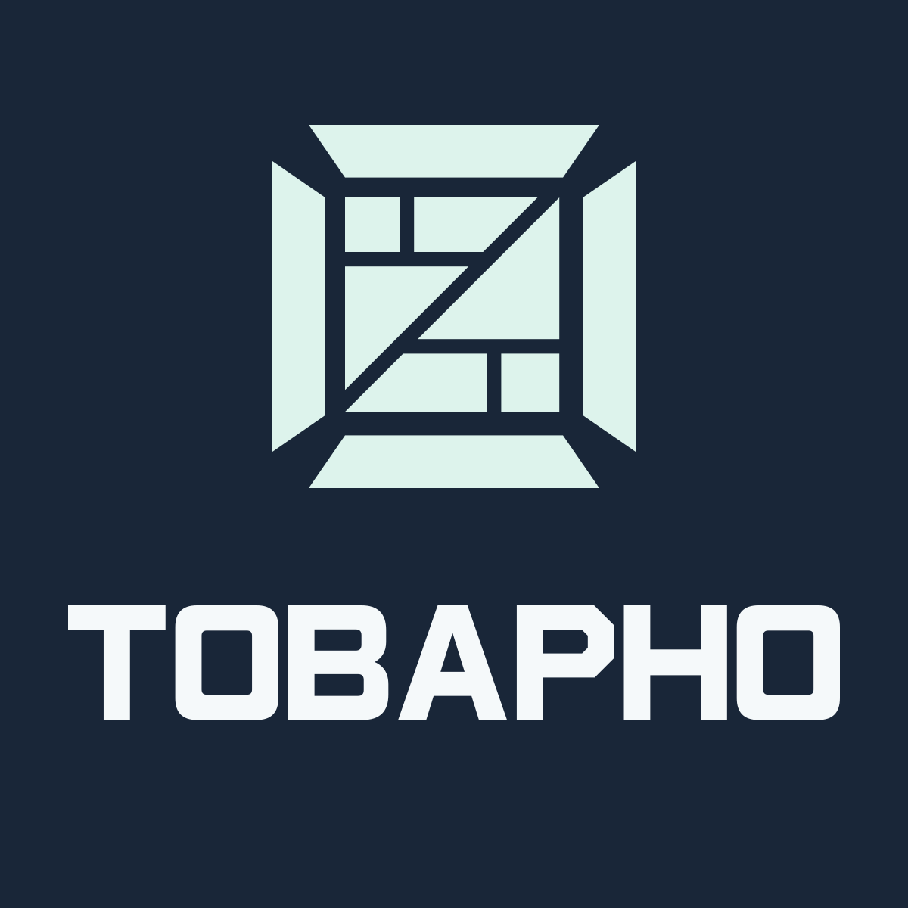

Светлая тема: чернильная надпись и бирюзовый знак. Тёмная тема: светлая надпись и мятный знак. Ледяной голубой — дополнительный фон.
Векторные мастера собраны из кривых: установка шрифтов не нужна. Размер SVG можно менять без потери качества. PNG предназначены для быстрых вставок и просмотра. Этот лист можно распечатать или сохранить в PDF из браузера.
Палитра указана в sRGB. Для типографии конвертировать цвета в CMYK с профилем выбранной печати и согласовать цветопробу. Минимальные размеры выше — исходные рекомендации, перед тиражом нужна проверка на конкретном носителе.